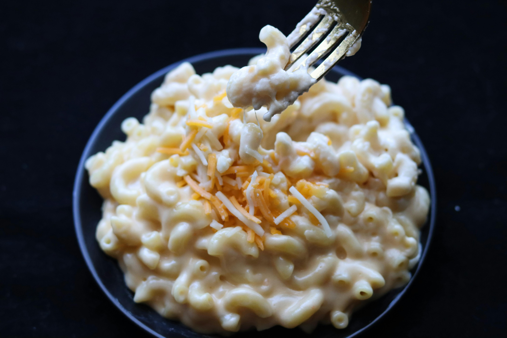

Mac & Cheese

A creamy, cheesy, and comforting meal
Ingredients:
- 1/2 Lb uncooked Elbow Macaroni
- 3 Tbsp Butter
- 2 Tbsp All Purpose Flour
- 1/2 Tsp Salt
- 1/8 Tsp ground Black Pepper
- 1 1/2 Cups Milk
- 3/4 Cup Half and Half
- 2 1/2 Cups shredded Cheddar Cheese
Instructions:
- Preheat the oven to 325 degrees F and lightly grease an 8' square (or similar size) baking dish.
- Cook the macaroni to al dente, according to package instructions. Drain and set aside.
- Make the sauce: Melt the butter in a medium saucepan over medium heat. Blend in the flour, salt, and pepper. Cook for 2 minutes. Slowly add the milk and half and half, stirring constantly, and cook over medium-low heat for a few minutes until the mixture has thickened like the consistency of gravy, about 5-7 minutes. Remove from heat and stir in 1 cup shredded cheese, stirring just until melted
- Combine:Add the cooked macaroni noodles and toss to coat. Pour half or the pasta mixture into the prepared baking dish. Sprinkle ½ cup cheese over the top. Add remaining pasta and sprinkle with remaining cheese.
- Bakefor 15-20 minutes or until cheese is melted on top.
Home